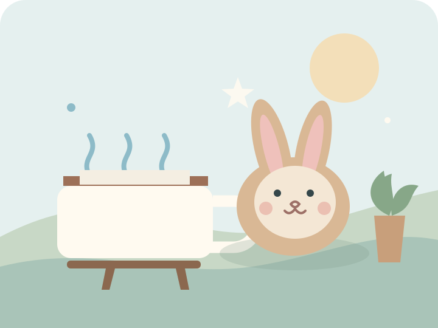

精選咖啡豆
以一杯香氣平衡的咖啡，為休息時光揭開序幕。
A LITTLE PAUSE, A LITTLE COMPANY
在熟悉的香氣裡，找到自己與兔子的相處方式。
品牌介紹示範文案・內容待確認

SLOW MOMENTS
兔子咖啡廳是一個以咖啡與兔子互動為主題的空間。你可以放慢腳步，享受一杯咖啡，也用自在的步調認識兔子。
這段品牌介紹為示範文案，實際服務內容與兔子照護方式請店家確認後再發布。
A FEW GOOD THINGS
以一杯香氣平衡的咖啡，為休息時光揭開序幕。
讓咖啡的風味慢慢展開，陪你把步調放緩一些。
在友善、從容的氛圍裡，認識兔子不同的個性。
以上為示範文案，實際咖啡品項、烘焙方式及互動規範待確認。
TAKE YOUR TIME
看看品牌故事，或先查詢聯絡資訊。